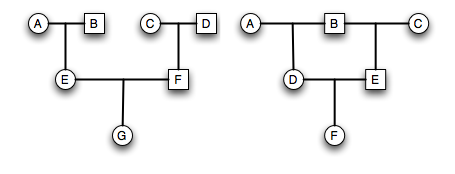
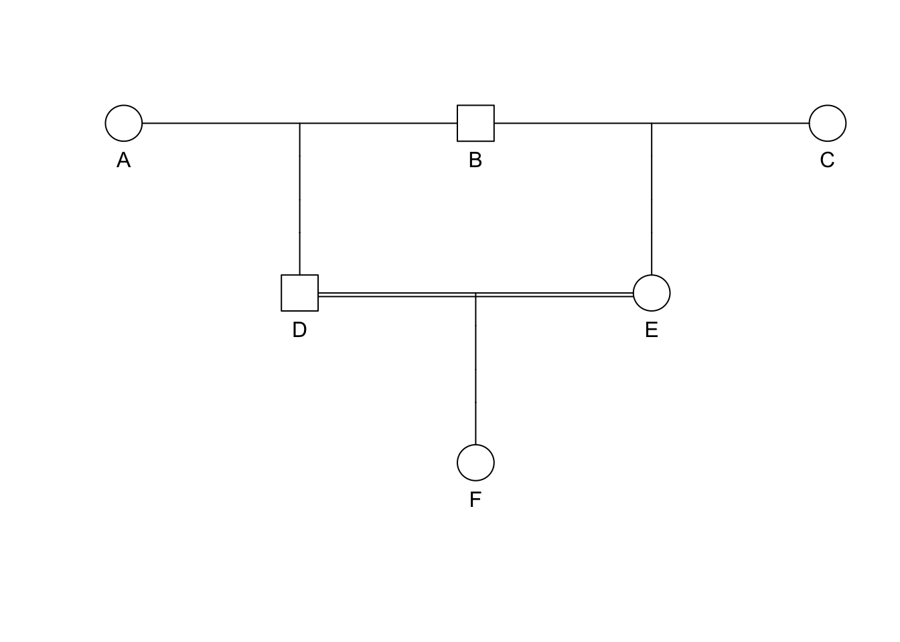
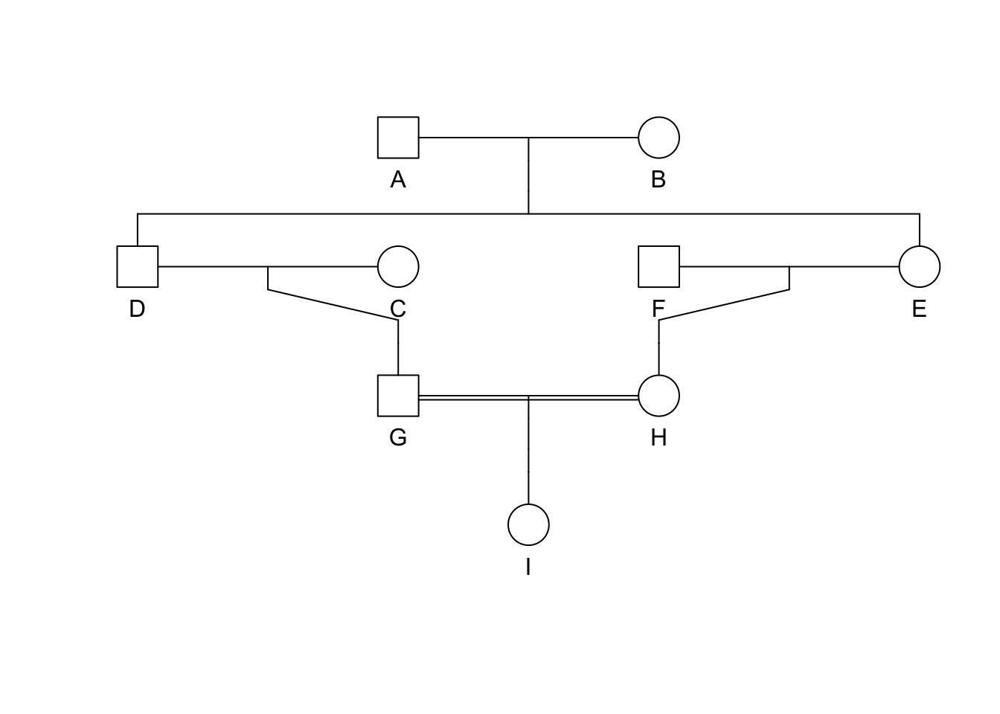
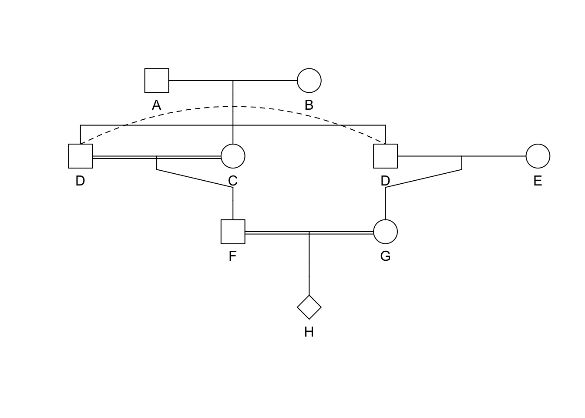
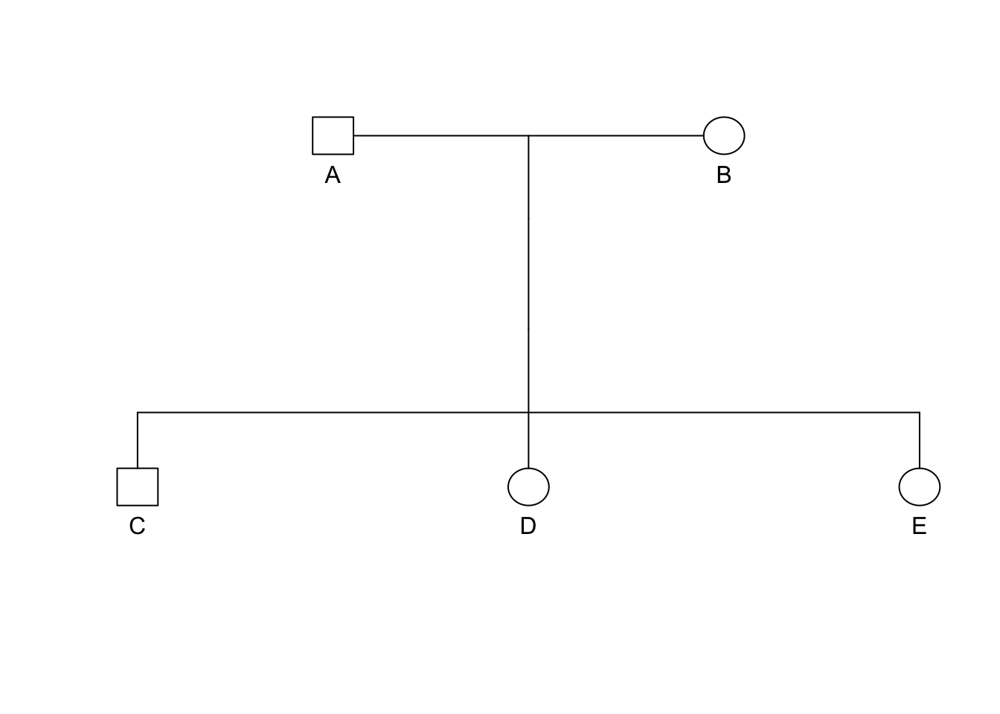
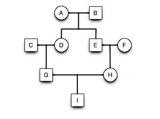
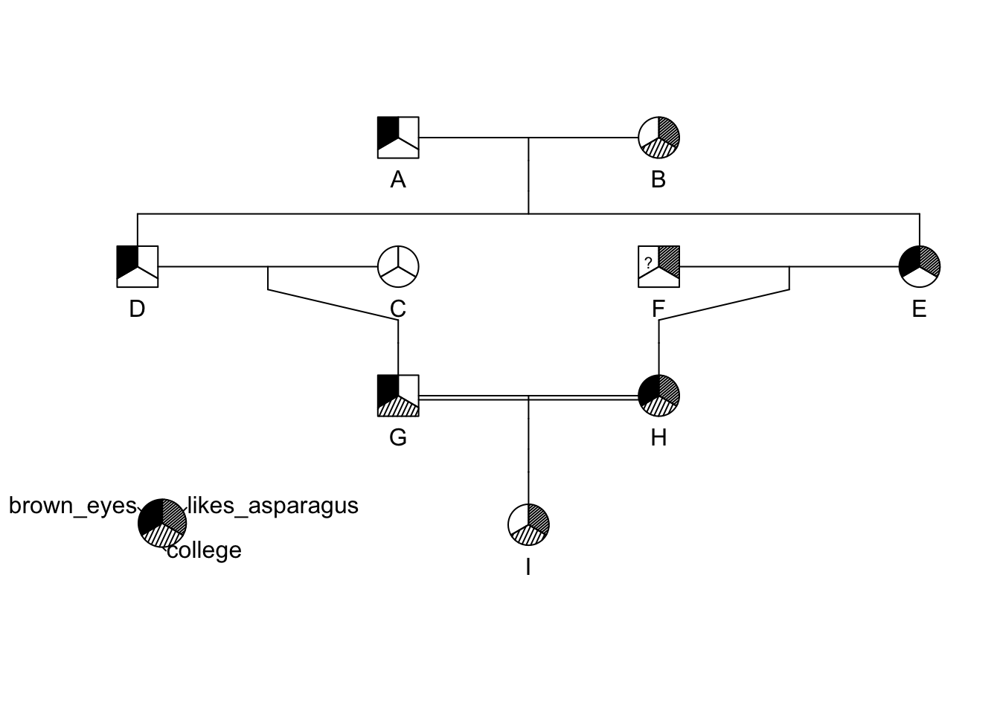

knitr::include_graphics("./media/HapsburgPedigree.png")
Pedigrees are visual representations of genetic relations. They are extremely important for estimating inbreeding and following traits or diseases in lineages. In this lecture, we will learn:
In the analysis of pedigrees, we often use the following terminology:
A pedigree is simply a graphical representation characterizing the relationship amongst ancestral individuals. This tool is very helpful for understanding the process of inbreeding when it occurs during a handful of generations.
Perhaps the most studied pedigree is that of the Hapsburg Dynasty, dating from 1516-1700, which controlled most of what we call modern Europe. Some of the European Royalty were interbred to maintain familial relationships and consolidate power. Examples include:
| King | Queen | Consanguineous Marriage |
|---|---|---|
| Philip I (1478-1506) | Joanna I of Castile & Aragon | Third cousins |
| Charles I (1500-1558) | Isabella of Portugal | First cousins |
| Philip II (1527-1598) | Mary of Portugal | Double first cousins |
| \(\;\) | Mary I of England | First cousins once removed |
| \(\;\) | Anna of Austria | Uncle-Niece |
| Philip III (1578-1621) | Margaret of Austria | First cousins once removed |
| Philip IV (1605-1665) | Elizabeth of Bourbon | Third cousins |
| \(\;\) | Mariana of Austria | Uncle-Niece |
| Charles II (1661-1700) | Marie Louise d’Orleans | Second cousins |

knitr::include_graphics("./media/HapsburgPedigree.png")
In this lineage, there were two genetic disorders that became paramount:
Pedigree Symbology
knitr::include_graphics("media/pedigree1.png")
knitr::include_graphics("./media/pedigree0.png")
Extraneous individuals may be removed from the depiction. Why is it that C and F are not shown on the pedigree on the right side?
Estimating Inbreeding From Pedigrees
The inbreeding coefficient, F, of an individual is determined by the probability that a pair of alleles carried by gametes are IBD from a recent common ancestor.
knitr::include_graphics("./media/pedigree2.png")
Expectations for \(F\) in a pedigree.
knitr::include_graphics("./media/pedigree2.png")
knitr::include_graphics("./media/pedigree2.png")
Transition probabilities for all cases of alleles within the children of B are:
knitr::include_graphics("./media/pedigree2.png")

Total probability for B donating autozygous alleles to his offspring are then:
[ = + F_A + F_A + \ = + F_A \ = (1.0 + F_A) \ ]
Expectations for \(F\) in a pedigree.
knitr::include_graphics("./media/pedigree2.png")
Generalized Formula for Inbreeding | Chain Counting Method
knitr::include_graphics("./media/pedigree2.png")
[ F = ( )^i (1.0 + F_A) ] where the exponent \(i\) is the length of the ancestral loop (e.g., the number of steps starting at F and going trough the common ancestor and back to F) which in this case is DBE (the common ancestor is underlined).
Several Ancestral Loops
knitr::include_graphics("./media/pedigree4.png")
If there is more than one ancestral loop, then the final inbreeding coefficient, F, is the sum of the F estimated across each loop (assuming there are \(K\) different loops in the pedigree). In this example you would use both GDAEH and GDBEH.
[ F = _{k=1}^{K} ]
N.B. Each ancestor may have different \(F_k\) values.
Strategies for Pedigrees
Here is a basic strategy for solving pedigree questions.
Easy Example, F=?
library(kinship2)
id <- LETTERS[1:6]
dadid <- c(NA,NA,NA,"B","B","D")
momid <- c(NA,NA,NA,"A","C","E")
sex <- c("female","male","female","male","female","female")
ped <- pedigree( id, dadid, momid, sex)
pedPedigree object with 6 subjects
Bit size= 3 plot(ped)
Easy Example, F=?
library(kinship2)
id <- LETTERS[1:9]
momid <- c(NA,NA,NA,"B","B",NA,"C","E","H")
dadid <- c(NA,NA,NA,"A","A",NA,"D","F","G")
sex <- c("male","female","female","male","female","male","male","female","female")
ped <- pedigree( id, dadid, momid, sex)
plot(ped)
Medium Example, F=?
id <- LETTERS[1:8]
dadid <- c(NA,NA,"A","A",NA,"D","D","F")
momid <- c(NA,NA,"B","B",NA,"C","E","G")
sex <- c("male","female","female","male","female","male","female","unknown")
ped <- pedigree( id, dadid, momid, sex)
suppressWarnings(plot(ped))
Example Pedigree
library(kinship2)
id <- LETTERS[1:5]
dadid <- c(NA,NA,"A","A","A")
momid <- c(NA,NA,"B","B","B")
sex <- c("male","female","male","female","female")
data <- data.frame( id, dadid,momid,sex)
data id dadid momid sex
1 A <NA> <NA> male
2 B <NA> <NA> female
3 C A B male
4 D A B female
5 E A B femaleExample Pedigree
ped <- pedigree(data$id, data$dadid, data$momid, data$sex)
pedPedigree object with 5 subjects
Bit size= 4 summary(ped) Length Class Mode
id 5 -none- character
findex 5 -none- numeric
mindex 5 -none- numeric
sex 5 factor numeric Example Pedigree
plot.pedigree(ped)

Decay of \(F\), The effects of size in the ancestral loop
This lecture covered the creation and analysis of pedigree data. At the end of this lecture you should be able to:
id <- LETTERS[1:9]
momid <- c(NA,NA,NA,"B","B",NA,"C","E","H")
dadid <- c(NA,NA,NA,"A","A",NA,"D","F","G")
sex <- c("male","female","female","male","female","male","male","female","female")
brown_eyes <- c(1,0,0,1,1,NA,1,1,0)
college <- c(0,1,0,0,0,0,1,1,1)
likes_asparagus <- c(0,1,0,0,1,1,0,1,1)
traits <- cbind( brown_eyes, college, likes_asparagus)
ped <- pedigree( id, dadid, momid, sex, affected = traits)
plot(ped)
pedigree.legend( ped, location="bottomleft",radius=.2)
library(gstudio)
p1 <- c("Ai","Aj")
p2 <- c("Ak","Al")
offs <- c( locus( c(p1[1],p2[1]) ),
locus( c(p1[2],p2[1]) ),
locus( c(p1[1],p2[2]) ),
locus( c(p1[2],p2[2]) ) )
offs[1] "Ai:Ak" "Aj:Ak" "Ai:Al" "Aj:Al"| Relationship | \(k_0\) | \(k_1\) | \(k_2\) | \(r\) |
|---|---|---|---|---|
| Identical Twins | 0 | 0 | 1 | 1 |
| Full Sibs | 0.25 | 0.5 | 0.25 | 0.5 |
| Parent Offspring | 0 | 1 | 0 | 0.5 |
| Half Sib | 0.5 | 0.5 | 0 | 0.25 |
| Aunt-nephew | 0.5 | 0.5 | 0 | 0.25 |
| First Cousin | 0.75 | 0.25 | 0 | 0.125 |
| Unrelated | 1 | 0 | 0 | 0 |
sdf
ped <- pedigree( id, dadid, momid, sex, affected = traits)
plot(ped)
pedigree.legend( ped, location="bottomleft",radius=.2)
kinship(ped) A B C D E F G H I
A 0.500 0.000 0.000 0.2500 0.2500 0.000 0.12500 0.12500 0.12500
B 0.000 0.500 0.000 0.2500 0.2500 0.000 0.12500 0.12500 0.12500
C 0.000 0.000 0.500 0.0000 0.0000 0.000 0.25000 0.00000 0.12500
D 0.250 0.250 0.000 0.5000 0.2500 0.000 0.25000 0.12500 0.18750
E 0.250 0.250 0.000 0.2500 0.5000 0.000 0.12500 0.25000 0.18750
F 0.000 0.000 0.000 0.0000 0.0000 0.500 0.00000 0.25000 0.12500
G 0.125 0.125 0.250 0.2500 0.1250 0.000 0.50000 0.06250 0.28125
H 0.125 0.125 0.000 0.1250 0.2500 0.250 0.06250 0.50000 0.28125
I 0.125 0.125 0.125 0.1875 0.1875 0.125 0.28125 0.28125 0.53125